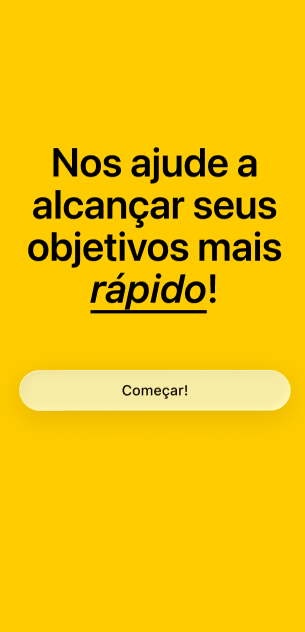

Detalhes do Projeto

Visão Geral do Projeto
O do.it é um aplicativo de acompanhamento de hábitos com gamificação, desenvolvido na disciplina de Gerência de Configuração e Desenvolvimento Web e Mobile. O usuário cadastra hábitos com frequência semanal, faz check-in diário e desbloqueia conquistas conforme mantém a constância.
Esta página foca no backend: uma API REST em FastAPI com SQLAlchemy e PostgreSQL, autenticação por JWT, cálculo de streaks, sistema de conquistas e uma suíte de testes automatizados. A API é empacotada com Docker para rodar de forma idêntica em qualquer ambiente.
Principais Aspectos Técnicos
Autenticação com JWT
Cadastro e login com bcrypt e tokens JWT de 24 horas. Rotas protegidas por OAuth2 Bearer.
Hábitos e Check-in
Hábitos com frequência semanal e check-in com toggle. Cada usuário só acessa os próprios dados.
Streaks e Conquistas
Streak calculado a partir dos check-ins e conquistas desbloqueadas automaticamente por critérios.
Testes e Docker
40 testes com Pytest e SQLite, e Dockerfile com python:3.11-slim e usuário sem root.